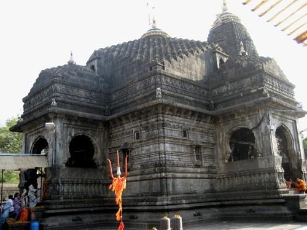

Trimbakeshwar, Maharashtra
The next name in the list of top 10 most famous Lord Shiva temples in India is that if Trimbakeshwar Temple near Nashik in Maharashtra. One of the jyotirlingas, the temple lies at the source of River Godavari and was built by Peshwa Balaji Baji Rao. The lingam in the temple embodies Lord Rudra, Lord Brahma and Lord Vishnu.